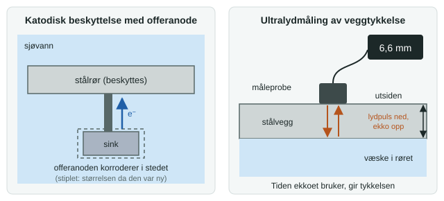

Korrosjonsbeskyttelse og inspeksjon
Korrosjon kan ikke stoppes helt, men den kan bremses mye. Et anlegg beskyttes ved at man velger riktig materiale, dekker metallet, endrer miljøet rundt det og følger med på hvor fort veggene blir tynnere. Operatøren er en viktig del av dette.
Bryt en av de tre tingene
På siden Hva er korrosjon? lærte du at metall, vann og oksygen må være til stede samtidig. All korrosjonsbeskyttelse bygger på å fjerne eller stenge ute én av dem, på å bremse reaksjonen, eller på å tilføre stålet elektroner utenfra (katodisk beskyttelse), slik at stålet ikke trenger å gi dem fra seg.
| Metode | Hva den gjør |
|---|---|
| 1 Riktig materiale og utforming | Metallet tåler miljøet, og vann blir ikke stående. |
| 2 Overflatebeskyttelse | Et lag stenger vann og oksygen ute fra metallet. |
| 3 Katodisk beskyttelse | Et annet metall, eller strøm utenfra, gir elektronene i stedet for stålet. |
| 4 Endre miljøet | Oksygen, syre eller salt fjernes fra væsken, eller det tilsettes et stoff som bremser korrosjonen. |
1 Riktig materiale og utforming
Det beste vernet bestemmes allerede når anlegget bygges. Vanlig stål er billig og sterkt, men korroderer i vann. Der det er vann og kjemikalier, velges ofte rustfritt stål, titan (sjøvann), plast eller glassfiberarmert plast, eller stål som er foret med gummi, plast eller glass på innsiden.
Utformingen betyr også mye. Gode løsninger er rør som kan tømmes helt, uten lavpunkter der vann blir stående, få trange spalter, og ingen ulike metaller i kontakt med hverandre. Det hindrer flere av korrosjonstypene du lærte om på siden Typer korrosjon i prosessanlegg.
2 Overflatebeskyttelse
Et lag på overflaten stenger vann og oksygen ute:
- Maling og lakk: Flere lag maling på stålkonstruksjoner, rør og tanker. Malingen må være hel. En liten skade slipper inn vann, og rusten kan spre seg under malingen. Det ser ut som bobler eller avflassing.
- Varmforsinking: Stålet dyppes i smeltet sink, slik at det får et lag av sink utenpå. Rekkverk, gitterrister, bolter og stålbjelker er ofte varmforsinket. Sinken beskytter stålet på to måter: Den stenger vann og luft ute, og den korroderer selv i stedet for stålet hvis laget får en ripe.
- Foring på innsiden: Tanker og rør for syrer kan fores med gummi, plast eller glass.
3 Katodisk beskyttelse
Ved katodisk beskyttelse får stålet tilført elektroner fra et annet sted, slik at stålet selv ikke trenger å gi dem fra seg. Da korroderer ikke stålet. Dette brukes på stål som står i vann eller jord, for eksempel sjøvannsrør, kaier, skipsskrog, tanker og rør under bakken og varmtvannsberedere.

Det finnes to måter:
- Offeranode: En blokk av et metall som lettere gir fra seg elektroner enn stål, oftest sink, aluminium eller magnesium, festes til stålet. Husk rekka på siden Typer korrosjon i prosessanlegg. Dette er galvanisk korrosjon brukt med vilje. Offeranoden korroderer i stedet for stålet og må byttes når den er brukt opp.
- Påtrykt strøm: En likeretter sender strøm gjennom vannet eller jorda til stålet fra anoder som tåler det. Det brukes på store konstruksjoner og lange rørledninger. Strømmen må overvåkes og justeres.
4 Endre miljøet
Noen ganger er det lettere å endre væsken enn metallet:
- Fjerne oksygen: Fødevann til dampkjeler blir avluftet, og det tilsettes kjemikalier som binder resten av oksygenet.
- Justere pH: Vann som er litt basisk, gir mindre korrosjon på stål enn surt vann.
- Inhibitor: Et stoff som tilsettes i små mengder og bremser korrosjonen, ofte ved at det legger seg som en tynn hinne på metallet. Det brukes i kjølevann, i lukkede varmeanlegg og i rørledninger for olje og gass.
- Holde tørt: Utstyr som står stille, kan tømmes og tørkes eller fylles med nitrogen, slik at det ikke ruster innvendig mens det ikke brukes.
Kjemikaliene doseres etter prosedyre, og operatøren følger med på dosering, pH og andre prøver.
Inspeksjon: følg med på korrosjonen
Beskyttelsen virker aldri perfekt. Derfor må anlegget kontrolleres jevnlig. Det kalles inspeksjon. Inspeksjon er en form for tilstandsovervåking, og den er grunnlaget for tilstandsbasert vedlikehold. Begge deler lærte du om på siden Typer vedlikehold.
| Metode | Slik virker den | Finner |
|---|---|---|
| visuell kontroll | Se etter rust, rustrenner, bobler i malingen, skadet isolasjon og lekkasjer. Gjøres blant annet på operatørens runder. | skader på overflaten |
| ultralydmåling av veggtykkelse | En måleprobe settes på veggen med litt gel. Den sender en lydpuls inn i metallet og måler tiden ekkoet bruker fra innsiden og tilbake. Instrumentet regner om tiden til tykkelse. | tynnere vegg, også fra innsiden |
| korrosjonskupong | En liten metallbit av samme materiale henges inn i prosessen. Den veies før og etter, for eksempel etter tre måneder. Massetapet viser hvor fort materialet korroderer. | korrosjonshastigheten i prosessen |
| røntgen | Bilde gjennom røret, også gjennom isolasjon. | groper, tynne partier og korrosjon under isolasjon |
| innvendig inspeksjon | Tanker og beholdere åpnes og kontrolleres innvendig, ofte under en revisjonsstans. | alle typer skader på innsiden |
Veggtykkelsen måles på faste målepunkter, som er merket på røret og registrert i vedlikeholdssystemet. Da kan man sammenligne målingene fra år til år og se en trend.
Oppgave: På et målepunkt ble veggtykkelsen målt til 7,40 mm i 2022 og 6,60 mm i 2026. Røret må byttes før veggen blir tynnere enn 4,00 mm. Hvor fort korroderer røret, og omtrent når må det byttes hvis korrosjonen fortsetter like fort?
Løsning:
- Hvor mye er borte? 7,40 mm − 6,60 mm = 0,80 mm på 4 år.
- Korrosjonshastighet: \( \dfrac{0{,}80\ \text{mm}}{4\ \text{år}} = 0{,}20\ \text{mm/år} \)
- Hvor mye kan fortsatt korrodere bort? 6,60 mm − 4,00 mm = 2,60 mm.
- Tid som er igjen: \( \dfrac{2{,}60\ \text{mm}}{0{,}20\ \text{mm/år}} = 13\ \text{år} \), altså rundt 2039.
Svar: Røret korroderer 0,20 mm/år og må byttes rundt 2039. Fordi korrosjonen kan gå fortere enn før, settes neste måling mye tidligere, ofte etter noen få år.
Hva gjør operatøren?
- Ser etter rust, rustrenner, bobler i malingen og skadet isolasjon på runden, og melder fra.
- Melder fra om lekkasjer, også små dråper ved flenser og ventiler.
- Holder dreneringshull og avløp frie (for eksempel i isolasjonskappe, renner og bunnplater), så regnvann ikke blir stående.
- Står ikke og går ikke på isolerte rør, og lar ikke verktøy ligge og skrape på malte flater.
- Følger med på dosering av inhibitor og andre kjemikalier, og tar prøver etter prøveplanen.
- Bruker riktig materiale ved bytte av deler, slik arbeidsordren sier.
- Inhibitorer, oksygenfjernere og pH-kjemikalier kan være etsende eller giftige. Les sikkerhetsdatabladet og bruk riktig verneutstyr.
- Maling kan inneholde løsemidler som er brannfarlige og skadelige å puste inn. Sandblåsing og sliping gir støv. Følg prosedyren for avsug og åndedrettsvern.
- Utstyr som er fylt med nitrogen, har ikke nok oksygen til å puste. Det gir kvelningsfare når det åpnes, og ved arbeid inne i det.
- Røntgen gir strålefare. Bare sertifisert personell gjør det, og området sperres av.
- Innvendig inspeksjon av tanker er arbeid i trange rom. Det krever arbeidstillatelse, isolering og gassmåling først. Se Sikker jobbing ved vedlikehold.
Test deg selv
1. Et stålrør i sjøvann har en blokk av sink festet til seg. Hva skjer?
- Stålet korroderer raskere, fordi sinken trekker elektroner fra det.
- Sinken korroderer i stedet for stålet, og stålet blir beskyttet.
- Både sinken og stålet slutter å korrodere.
Sink gir lettere fra seg elektroner enn stål. Sinkblokken er en offeranode. Den blir brukt opp og må byttes.
2. Hvorfor er det viktig at malingen på et stålrør er hel?
- Malingen gjør stålet sterkere.
- En skade slipper inn vann og oksygen, og rusten kan spre seg under malingen.
- Malingen leder strøm bort fra røret.
Malingen stenger vann og oksygen ute. Ved en skade kommer de til metallet, og rusten kan krype innover under malingen.
3. Hvilken metode måler veggtykkelsen uten å åpne røret?
- korrosjonskupong
- ultralydmåling
- innvendig inspeksjon
Ultralydproben settes på utsiden og måler tiden lydpulsen bruker fram og tilbake gjennom veggen.
4. Hva er en inhibitor?
- et metall som korroderer i stedet for stålet
- et lag maling på innsiden av røret
- et stoff som tilsettes i små mengder og bremser korrosjonen
Inhibitoren legger seg ofte som en tynn hinne på metallet. Den brukes blant annet i kjølevann og rørledninger.
5. En vegg var 8,0 mm i 2020 og 7,0 mm i 2025. Hva er korrosjonshastigheten?
- 0,10 mm/år
- 0,20 mm/år
- 1,0 mm/år
Veggen har mistet 1,0 mm på 5 år. 1,0 mm delt på 5 år er 0,20 mm/år.
Ordliste
| Begrep | Forklaring | Engelsk |
|---|---|---|
| korrosjonsbeskyttelse | Tiltak som bremser korrosjon, for eksempel riktig materiale, maling, katodisk beskyttelse eller inhibitor. | corrosion protection |
| varmforsinking | Å dyppe stål i smeltet sink, slik at det får et lag av sink som beskytter mot rust. | hot-dip galvanizing |
| katodisk beskyttelse | Å beskytte stål ved å tilføre det elektroner fra en offeranode eller fra strøm utenfra, slik at stålet ikke korroderer. | cathodic protection |
| offeranode | En metallblokk, for eksempel av sink, aluminium eller magnesium, som kobles til stålet og korroderer i stedet for det. | sacrificial anode |
| inhibitor | Et stoff som tilsettes i små mengder i en væske og bremser korrosjonen. | corrosion inhibitor |
| inspeksjon | Jevnlig kontroll av utstyr for å finne korrosjon, sprekker og andre skader før de gir lekkasje eller brudd. | inspection |
| ultralydmåling | Måling av veggtykkelse med en lydpuls som sendes inn i veggen. Tiden ekkoet bruker, gir tykkelsen. | ultrasonic thickness measurement |
| korrosjonskupong | En liten metallbit som henges inn i prosessen og veies før og etter, for å finne korrosjonshastigheten. | corrosion coupon |
| målepunkt | Et fast, merket sted på et rør eller en tank der veggtykkelsen måles hver gang, slik at målingene kan sammenlignes. | measurement point |
Les mer
- Typer korrosjon i prosessanlegg: hvor korrosjonen angriper.
- Typer vedlikehold: tilstandsbasert vedlikehold og tilstandsovervåking.
- Systematisk vedlikehold: vedlikeholdssystem, historikk og revisjonsstans.
Om kildene: Teksten, eksemplene og figurene på denne siden er laget for dette nettstedet. Siden bygger på undervisningsopplegg i kjemiprosess- og laboratoriefag ved Sauda vgs, som er utarbeidet med utgangspunkt i blant annet Kjemien stemmer, Laboranten og åpne nettkilder.